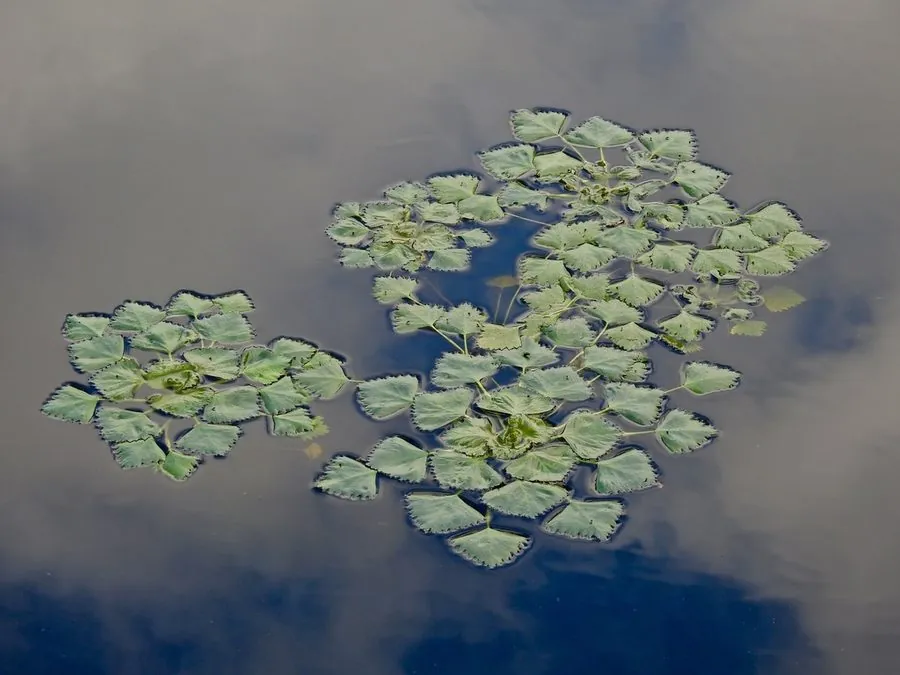

水生植物 · 植物界
菱角 Trapa natans

千屈菜科一年生浮叶水生草本，浮水叶菱形、叶柄有气囊，果实即菱角，可食可制淀粉，是江南“水八仙”之一。
- 分类
- 门被子植物门纲木兰纲目桃金娘目科千屈菜科属菱属
- 栖息环境
- 池塘、湖泊、水田等静水水域，喜温暖、阳光充足
- 地理分布
- 原产欧亚大陆，中国长江以南水乡广泛栽培
- 保护级别
- 暂无评估
物种志
菱角为千屈菜科菱属一年生浮叶水生草本，根生于水底泥中，茎细长，浮水叶菱形，边缘有锯齿，叶柄中部膨大成气囊，使叶片浮于水面；沉水叶羽状细裂，形似根。花小，白色，花期 6–8 月；果实为坚果，俗称菱角，具角状突起，果期 8–10 月。
菱角原产欧亚大陆，中国长江以南水乡广泛栽培，喜温暖、阳光充足和富含腐殖质的静水环境。它浮水叶的菱形叶片和叶柄气囊能帮助植株浮在水面，沉水叶细裂如丝，可吸收水中养分。菱角果实富含淀粉，可生食、煮食或制淀粉，是江南“水八仙”之一；菱叶和菱盘可作饲料，菱角壳还可制活性炭，是综合利用价值较高的水生作物。
形态与习性
- 株高浮水叶菱形，茎长可达 2 米
- 花期6–8 月，花小，白色
- 果期8–10 月，坚果即菱角
- 光照喜充足阳光
- 水分静水，水深 0.5–2 米
- 土壤富含腐殖质的水底淤泥
- 繁殖以果实（菱角）播种
- 主要用途菱角食用、制淀粉、饲料
趣味知识
- 菱角的浮水叶呈菱形，叶柄中部膨大成气囊，帮助叶片浮在水面。
- 它的沉水叶羽状细裂如丝，可代替根吸收水中养分。
- 果实具角状突起，俗称菱角，富含淀粉，是江南“水八仙”之一。
- 菱角可生食、煮食或制淀粉，菱盘还可作饲料。